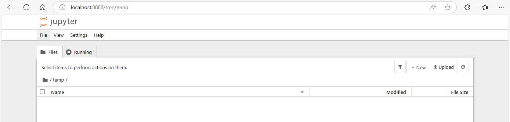
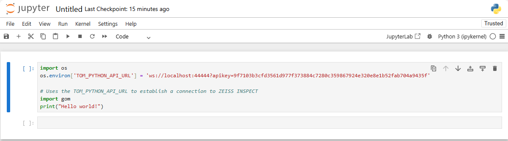
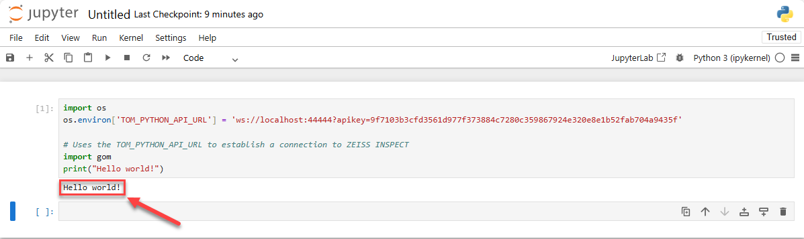

Using Jupyter Notebook
Abstract: This article shows how to run ZEISS INSPECT Python scripts interactively in Jupyter Notebook. For this purpose, a virtual Python environment is created where the ZEISS INSPECT API wheel and the Jupyter metapackage are installed.
Setup
Python installation
Using ZEISS INSPECT with Jupyter Notebook requires an additional Python 3.9 installation. Follow the installation instructions of your local IT or download and install Python 3.9 from www.python.org.
Python virtual environment
In this example, the Windows PowerShell is used to create and configure a virtual environment.
Create and enable a virtual environment named jupyter_env:
python -m venv jupyter_env
.\jupyter_env\Scripts\Activate.ps1
Note
The PowerShell prompt changes to (jupyter_env) PS <PATH>> showing that you are in the virtual environment.
Important
The following commands must be executed in the virtual environment jupyter_env.
Install the ZEISS INSPECT API wheel:
python -m pip install zeiss-inspect-api==2025.*
Install the Jupyter metapackage which provides Jupyter Notebook:
python -m pip install jupyter
Starting Jupyter Notebook
If you are not in the virtual environment jupyter_env already, go to the directory where is located and activate it (e.g. from a PowerShell):
.\jupyter_env\Scripts\Activate.ps1
Start Jupyter Notebook
jupyter notebook

Jupyter Notebook opens its web GUI in your browser. A file browser is shown initially.
Creating a Notebook
Use New ► ‘New Folder’ from the ‘Files’ tab to create a folder named
zeiss_inspect_jupyter.Go to the folder
zeiss_inspect_jupyter.Use File ► New ► Notebook from the main menu to create a new notebook.
A dialog ‘Select Kernel’ is shown.
Select ‘Python3 (ipykernel)’ from the dropdown menu.
Modify the following Python code using your API port and API key (see Using Visual Studio Code as App editor – ZEISS INSPECT configuration) and enter it in the first cell of your notebook:
import os os.environ['TOM_PYTHON_API_URL'] = 'ws://localhost:44444?apikey=9f7103b3cfd3561d977f373884c7280c359867924e320e8e1b52fab704a9435f' # Uses the TOM_PYTHON_API_URL to establish a connection to ZEISS INSPECT import gom print("Hello world!")

Run the cell.

The text ‘Hello world!’ should have been printed below the first cell.
Add another cell below the first one to show that using the ZEISS INSPECT API actually works:
import gom.api.interpreter print(gom.api.interpreter.get_pid())
This prints the process ID (PID) of your running ZEISS INSPECT instance – compare with the output from running
tasklist | findstr 'INSPECT'in a PowerShell.
Using user-defined dialogs in a Notebook
When creating user-defined dialogs in an App using
DIALOG=gom.script.sys.create_user_defined_dialog (file='dialog.gdlg')
or
RESULT=gom.script.sys.execute_user_defined_dialog (file='dialog.gdlg'),
the dialog file is given relative to the App’s scripts/ folder.
To allow loading of dialog files relative to the current working directory – i.e. where the current Notebook (*.ipynb) file is located – you must include the following patch:
# Workaround for finding dialog files in current Notebook's folder
# Define the wrapper function
def patched_create_user_defined_dialog(file, *args, **kwargs):
# Prepend the path to the file
new_file = os.path.join(os.getcwd(), file)
# Call the original function with the modified file path
return original_create_user_defined_dialog(file=new_file, *args, **kwargs)
# Store the original function
original_create_user_defined_dialog = gom.script.sys.create_user_defined_dialog
# Replace the original function with the patched version
gom.script.sys.create_user_defined_dialog = patched_create_user_defined_dialog